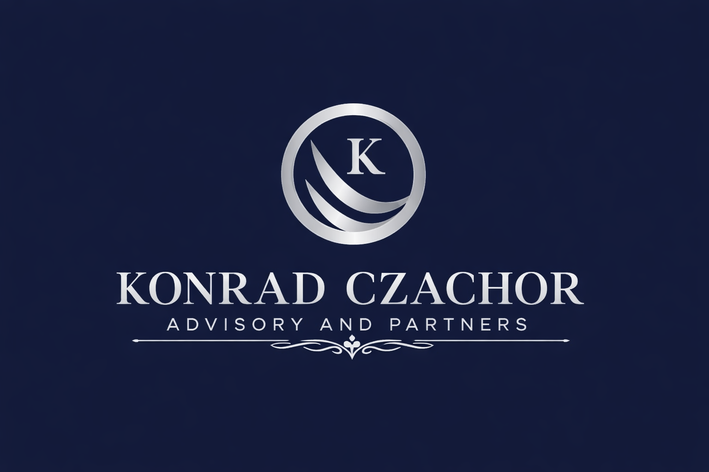

Operational stabilization, EBITDA protection and performance acceleration for Private Equity and Automotive Tier 1–2.
Schedule Executive DiscussionInterim Experts Network
Cross-Border Plant Execution
Level Reporting & Governance
Rapid plant assessment, liquidity protection and operational reset within 90 days.
Operational due diligence and post-acquisition value creation execution.
Cost reduction, KPI governance and OEM alignment.